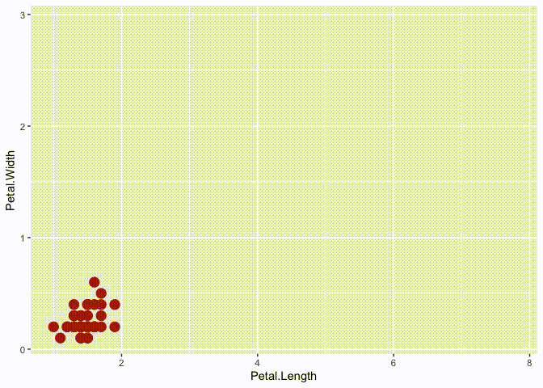

What is this?
tweenr is a package for interpolating data, mainly for animations. It provides a range of functions that take data of different forms and calculate intermediary values. It supports all atomic vector types along with factor, Date, POSIXct, characters representing colours, and list. tweenr is used extensibly by gganimate to create smooth animations, but can also be used by itself to prepare data for animation in another framework.
How do I get it?
tweenr is available on CRAN and can be installed with install.packages('tweenr'). In order to get the development version you can install it from github with devtools
#install.packages('devtools')
devtools::install_github('thomasp85/tweenr')An example
Following is an example of using the pipeable tween_state() function with our belowed iris data:
library(tweenr)
library(ggplot2)
# Prepare the data with some extra columns
iris$col <- c('firebrick', 'forestgreen', 'steelblue')[as.integer(iris$Species)]
iris$size <- 4
iris$alpha <- 1
iris <- split(iris, iris$Species)
# Here comes tweenr
iris_tween <- iris$setosa %>%
tween_state(iris$versicolor, ease = 'cubic-in-out', nframes = 30) %>%
keep_state(10) %>%
tween_state(iris$virginica, ease = 'elastic-out', nframes = 30) %>%
keep_state(10) %>%
tween_state(iris$setosa, ease = 'quadratic-in', nframes = 30) %>%
keep_state(10)
# Animate it to show the effect
p_base <- ggplot() +
geom_point(aes(x = Petal.Length, y = Petal.Width, alpha = alpha, colour = col,
size = size)) +
scale_colour_identity() +
scale_alpha_identity() +
scale_size_identity() +
coord_cartesian(xlim = range(iris_tween$Petal.Length),
ylim = range(iris_tween$Petal.Width))
iris_tween <- split(iris_tween, iris_tween$.frame)
for (d in iris_tween) {
p <- p_base %+% d
plot(p)
}
Other functions
Besides the tween_state()/keep_state() combo showcased above, there are a slew of other functions meant for data in different formats
tween_components takes a single data.frame, a vector of ids identifying recurrent elements, and a vector of timepoints for each row and interpolate each element between its specified time points.
tween_events takes a single data.frame where each row encodes a single unique event, along with a start, and end time and expands the data across a given number of frames.
tween_along takes a single data.frame along with an id and timepoint vector and calculate evenly spaced intermediary values with the possibility of keeping old values at each frame.
tween_at takes two data.frames or vectors along with a numeric vector giving the interpolation point between the two data.frames to calculate.
tween_fill fills missing values in a vector or data.frame by interpolating between previous and next non-missing elements
Easing
In order to get smooth transitions you’d often want a non-linear interpolation. This can be achieved by using an easing function to translate the equidistant interpolation points into new ones. tweenr has support for a wide range of different easing functions, all of which can be previewed using display_ease() as here where the popular cubic-in-out is shown:
tweenr::display_ease('cubic-in-out')
Spatial interpolations
The purpose of tweenr is to interpolate values independently. If paths and polygons needs to be transitioned the transformr package should be used as it expands tweenr into the spatial realm